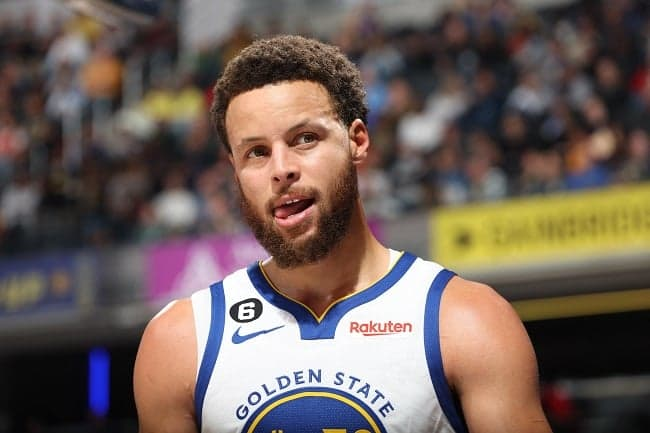
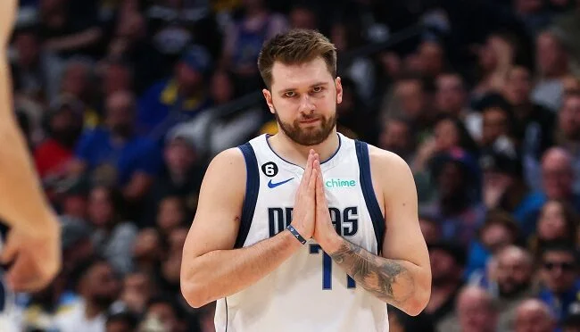

BASQUETE
O basquete foi criado em 1891, pelo professor canadense James Naismith. O objetivo inicial foi entreter os alunos da Springfield College, colégio internacional da Associação Cristã de Moços (ACM), durante o rigoroso inverno de Massachussets, nos Estados Unidos.
Stephen Curry

É um basquetebolista norte-americano que atua como armador.
Ele atua no time Golden State Warriors/4x Campeão da NBA: 2015, 2017, 2018, 2022;
Luka Dončić

Luka Dončić (Ljubljana, 28 de fevereiro de 1999) é um jogador de basquete esloveno, que joga atualmente no Dallas Mavericks, na NBA.Foi escolhido pelo Atlanta Hawks na 3ª escolha no Draft da NBA de 2018, em seguida trocado para os Dallas Mavericks por Trae Young.
Jimmy Butler